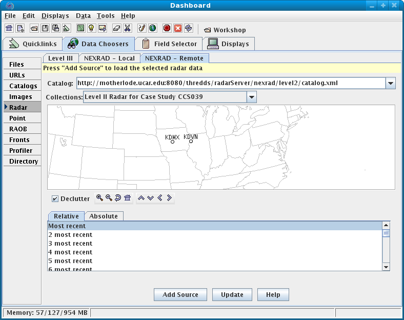
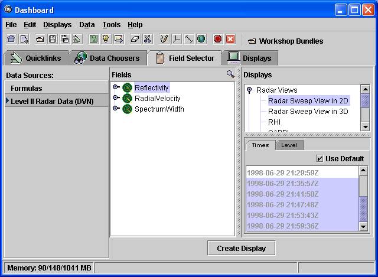
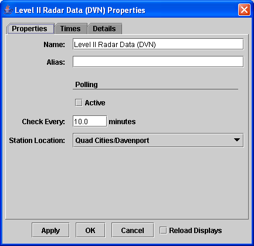

Level II data is accessed in the IDV from the remote THREDDS Data
Server, each file having data from one WSR-88D radar for all sweeps
(tilt) for one time.
The Level II data is supplied as volume-scan files, each file having
all
data from one WSR-88D radar for all sweeps for one "time".
Unidata Community sites can receive Level II data using the
Unidata Local Data Manager (LDM). Archived Level II data is
available from the National
Climatic Data Center (NCDC) (data from NCDC must be un-tarred and
optionally, uncompressed for better performance).
If the files are stored on your file system with each station's
files in a directory (folder) whose directory name is the station
4-character ID (e.g., KDVN for Davenport, Iowa). In many cases the data
files do not have any location information in them and the IDV uses the
directory name as a first guess at the station location. If you are
working with data files where the directory name is not the station id,
there is a way to specify the station in the IDV.
For the exercises in this section, we will use Level II data
corresponding to the same times as the Level III data we used from
the Bow Echo Case study in in the workshop dataset. See
[ht::popup ../../installandstart/LocalData.html "Installing local datasets"]
for more information if you need to install these data.
- Setup for Level II displays
- [ht::clearDisplaysAndData]
- Make sure the menu item
[ht::menu Projections {Auto-set Projection}] option is checked on.
- Show the 3D wireframe box by toggling on the main menu item
[ht::menu View Show {Wireframe Box}].
- Open the Level II Data Source Chooser
- [ht::openDataSourceChooser]
- In the [ht::dialog Data Source Chooser] click on the
[ht::tab Radar] tab. Then click on the [ht::tab NEXRAD Remote] tab to see the
Level II radar data remote chooser panel.
- In the catalog selector drop-down, select the motherlode
catalog that is included.
If it is not in the list, type it into the catalog selector area and press enter.
In the collections drop-down, select
[ht::tab Level II Radar for Case Study CCS039]
- Zoom in the map and select the station KDVN.
- Click on the
Absolute time radio button.
Select the images from 1998-06-29 21:00:00Z
through 1998-06-29 21:59:00Z.
- Click the [ht::button {Add Source}] button.

The data source [ht::dataset Level II Radar (KDVN)]
appears in the [ht::command Data Sources] list in the
[ht::dialog Field Selector].

Lets look at some of the properties of this dataset.
- [ht::editDataSourceProperties [ht::dataset {Level II Radar Data(DVN)}]]

- If you are looking at realtime data, you can set up the file
polling information here to automatically reload new data as it becomes
available.
- If the volume scans do not contain station information and you
did not set the station information in the chooser, you can change the
location using the widget in the properties dialog.
- Subset the times and choose the last five times from 1998-06-29
21:35:57Z to 1998-06-29 21:59:36Z and click [ht::button OK].
Level II data has three [ht::command Fields] (radar data moments or
data types). The IDV has several display types for Level II data. Any
of the moments can be shown with any of the displays. For the following
exercises, we will use Reflectivity.